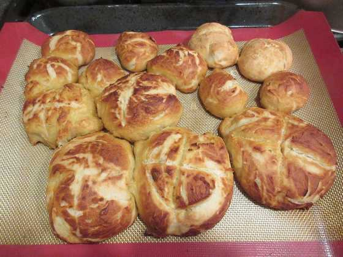
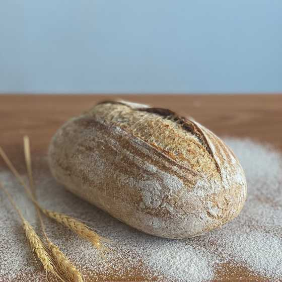

大分県日田市三和・天然酵母のパン屋
国産小麦と天然酵母で、
小さな窓から、ていねいなパンを。
nicoriは、国産小麦とホシノ天然酵母でパンを焼く、日田市の小さなパン屋さんです。
ABOUT
お店のこと
nicoriは、日田往還中津街道沿い、日田済生会病院の裏あたりにある小さなパン屋さんです。Instagramのプロフィールには「国産小麦とホシノ天然酵母でパンを焼いています」とあります。販売は火曜日・木曜日・土曜日の9時から(Instagramの案内による)で、取り置きにも対応しているそうです。
紹介する口コミサイトでは、ベーグルとあんバターが看板として挙げられ、「こんな所に!? と思う場所にある可愛い小さなパン屋さん」と書かれています。苺マフィンやしおぱんも並ぶことがあるようです。
店名「nicori」の意味や由来は確認できませんでした。にこりと笑顔になるようなパン、という読み方は制作側のイメージです。
BREAD
パンのイメージ
下の写真は、パンの雰囲気を伝えるフリー素材です。お店で販売しているパンそのものではありません。








写真はフリー素材のイメージで、店舗の実際の様子ではありません。
ベーグル・あんバター
看板として紹介されています(口コミサイトより)。
苺マフィン・しおぱん
食べログの写真キャプションより。
営業時間・価格・詳細
準備中
内容は変わることがあります。最新の販売日・商品は Instagram をご確認ください。
VOICE
口コミ
イメージ例以下は制作側が作成したイメージ例で、実在のお客様の声ではありません。
イメージ例
素朴な味わいで、噛むほどに小麦の香りがします。朝ごはんにしたくなりました。
イメージ例
小さなお店ですが、あたたかい雰囲気で、ついいろいろ選びたくなります。
イメージ例
ベーグルがもちもちで、友人にも教えたくなる味でした。
ACCESS
アクセス
| 所在地 | 〒877-0000 大分県日田市三和643-4 |
|---|---|
| 電話 | 準備中 |
| 営業時間 | 準備中(販売日はInstagramをご覧ください) |
| 定休日 | 準備中 |
| SNS | Instagram @nicori_4025 |
PHOTO CREDITS
写真クレジット
- croissants.jpg:「Croissants au beurre (18953292873)」Herry Wibisono (herryway)/CC0 1.0/撮影地不明
- sourdough.jpg:「Slices of sourdough bread」Angel Ganev/CC BY 2.0/撮影地不明
- rolls-tray.jpg:「Pretzel rolls on a tray, December 2023」Infrogmation/CC BY-SA 4.0/米国(出典元店舗の記録による)
- baguette-butter.jpg:「Baguette and butter curls」Pru.mitchell/CC BY-SA 4.0/オーストラリア(出典元店舗の記録による)
- toast-jam.jpg:「A modest breakfast at a London hotel. Toast with strawberry jam」MOs810/CC BY-SA 4.0/英国(出典元店舗の記録による)
- wheat-close.jpg:「Wheat close-up」User:Bluemoose/CC BY-SA 3.0/撮影地不明
- wheat-sky.jpg:「Ears of wheat」Daniela M./CC BY-SA 4.0/イタリア(出典元店舗の記録による)
- bread-basket.jpg:「Basket of rolls」Daniel Sone/パブリックドメイン(米国政府機関公開)/撮影地不明
- oven-glow.jpg:「Mixed flour bread in the oven C IMG 1676」Anneli Salo/CC BY-SA 4.0/フィンランド(出典元店舗の記録による)
- butter-bread.jpg:「Acme Bread and Butter (5277316173)」Neil Conway/CC BY 2.0/米国カリフォルニア州オークランド(出典元店舗の記録による)
- boules.jpg:「Home made sour dough bread」Tomascastelazo/CC BY-SA 4.0/撮影地不明
- batard.jpg:「Compleat Wheat Sourdough Bâtard」Do An Ngon Qua/CC BY-SA 4.0/撮影地不明
- round-loaf.jpg:「No-Knead Bread - Finished Loaf (294068096)」daisybush/CC BY 2.0/撮影地不明
- raisin-loaf.jpg:「Raisin bread crumb shot (6274216810)」Jim Champion/CC BY-SA 2.0/撮影地不明
- tin-loaf.jpg:「Tin Loaf - one slash in the crust」Mike Finn/CC BY 2.0/撮影地不明
- baguettes.jpg:「Baguettes - stonesoup」jules / stonesoup/CC BY 2.0/撮影地不明